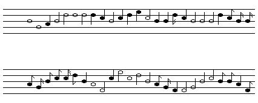

| Another example of scaling noise is called Brownian noise, a name suggested by Brownian motion, the motion visible in a drop of water when pollen grains are buffeted by water molecules. |
| To generate Brownian noise use the random number generator to produce not the durations and the tones of the notes, but rather the changes in the durations and tones. |
| The analogy is that the water molecules executing thermal (white) motion affect changes in the moton of the pollen grains. |
| With the obvious considerations for changes of durations, playing a tape of Brownian noise at a different speed still sounds like Brownian noise, so this is a scaling noise. |
| While this, too, wanders all over the place, most steps are very small, and playing a Brownian composition has the expected effect. |
| It is too predictable, too correlated, in a word - boring. |
|  |
| Listen: |
| Thanks to Harlan Brothers for the midi files of these tunes. |
Return to 1/f aspects of music.